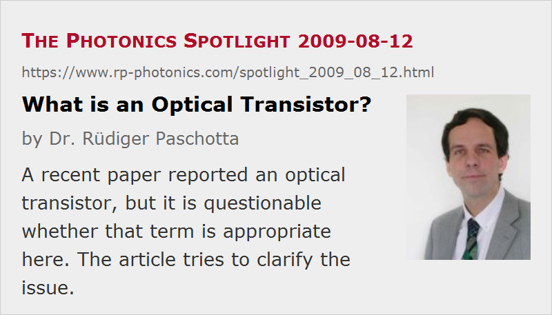

What is an Optical Transistor?
Posted on 2009-08-12 (revised on 2010-03-23) as a part of the Photonics Spotlight (available as e-mail newsletter!)
Permanent link: https://www.rp-photonics.com/spotlight_2009_08_12.html
Author: Dr. Rüdiger Paschotta, RP Photonics Consulting GmbH
Abstract: A recent paper reported an optical transistor, but it is questionable whether that term is appropriate here. The article tries to clarify the issue.

Ref.: J. Hwang et al., “A single-molecule optical transistor”, Nature 460, 76 (2009)
A recent publication (see the reference above) reported a novel kind of “optical transistor”, and obtained substantial publicity with that. However, it made me wonder whether this device really deserves that term. Surprisingly, although many people talk about such things, few seem to care about the semantics. I couldn't find a clear definition! If anybody has seen one, I am keen to learn about it.
Obviously, “optical transistor” should mean some kind of photonic analog of an electronic transistor, being able to perform similar functions. So what is the essence of the function of an electronic transistor? Everybody would agree that such a device allows one to control some voltage or current with another voltage or current. But that's not all – there is another essential detail: the controlled voltage or current must be larger than the control voltage or current. In other words, there is amplification. For a standard bipolar transistor, there is e.g. a substantial current gain, defined as the controlled emitter current divided by the required base current.
Note that the feature of amplification is essential not only when we use transistors to build amplifiers. It is also required for use in logic circuits. If some logic gate would have to switch a current of 1 μA and would need 10 μA gate current to do that, one could obviously not connect many gates in a series.
Coming back to the optical transistor, this is usually considered important because it would allow to construct sophisticated optical circuits. So we see that amplification will be important just as it is for the electronic transistor. It is not sufficient simply to influence one light beam with another beam. In addition, it is required that several photons can be controlled per input photon.
Unfortunately, the device described in the above-mentioned article doesn't have that property. More precisely, it does exhibit some kind of amplification of the controlled beam, but not in the sense as discussed above: you need at least one control photon to switch one photon at the output. Therefore, in my opinion one should not call this device an optical transistor. (I had the opportunity to get opinions from several researchers on that matter, and they all fully confirmed my view.) Note that other kinds of optical transistors have been described, which do have the feature of amplification and thus deserve that name.
“Isn't this just semantics?”, some people may ask. My reply: yes, of course it is, but semantics are important. Generally, it is an essential standard of science to use clearly defined terms in order to avoid confusion. Where one uses a term for which there is no commonly accepted and well known definition, one has to explain what one means with it. Otherwise, it is not clear what exactly the statements mean.
In the concrete case, the label “optical transistor” for the presented device appears to already have caused confusion. Just look at the many reports describing that experiment as a milestone on the way to optical computing, apparently not recognizing that such kind of optical gates could not be combined arbitrarily because they lack amplification. So the label “optical transistor” appears to have raised expectations which cannot be met – not just due to an imperfect implementation, but as a consequence of the method used. Obviously, such confusion should be avoided in science. I have written this comment as an attempt to somewhat mitigate that confusion.
Note Added on 2010-03-23: New Paper by David A. B. Miller
David A. B. Miller has published the paper “Are optical transistors the logical next step?” in Nature Photonics 4, 3 (2010). He worked out more detailed criteria for transistors as practical logic elements:
- cascadability
- fan-out (the problem discussed above in some depth)
- logic-level restoration
- input/output isolation
- absence of critical biasing
- logic level independent of loss
Miller came to the conclusion that most “optical transistors” presented so far “fail on most of these criteria”.
This article is a posting of the Photonics Spotlight, authored by Dr. Rüdiger Paschotta. You may link to this page and cite it, because its location is permanent. See also the RP Photonics Encyclopedia.
Note that you can also receive the articles in the form of a newsletter or with an RSS feed.
Questions and Comments from Users
Here you can submit questions and comments. As far as they get accepted by the author, they will appear above this paragraph together with the author’s answer. The author will decide on acceptance based on certain criteria. Essentially, the issue must be of sufficiently broad interest.
Please do not enter personal data here; we would otherwise delete it soon. (See also our privacy declaration.) If you wish to receive personal feedback or consultancy from the author, please contact him e.g. via e-mail.
By submitting the information, you give your consent to the potential publication of your inputs on our website according to our rules. (If you later retract your consent, we will delete those inputs.) As your inputs are first reviewed by the author, they may be published with some delay.
|  |
If you like this page, please share the link with your friends and colleagues, e.g. via social media:
These sharing buttons are implemented in a privacy-friendly way!